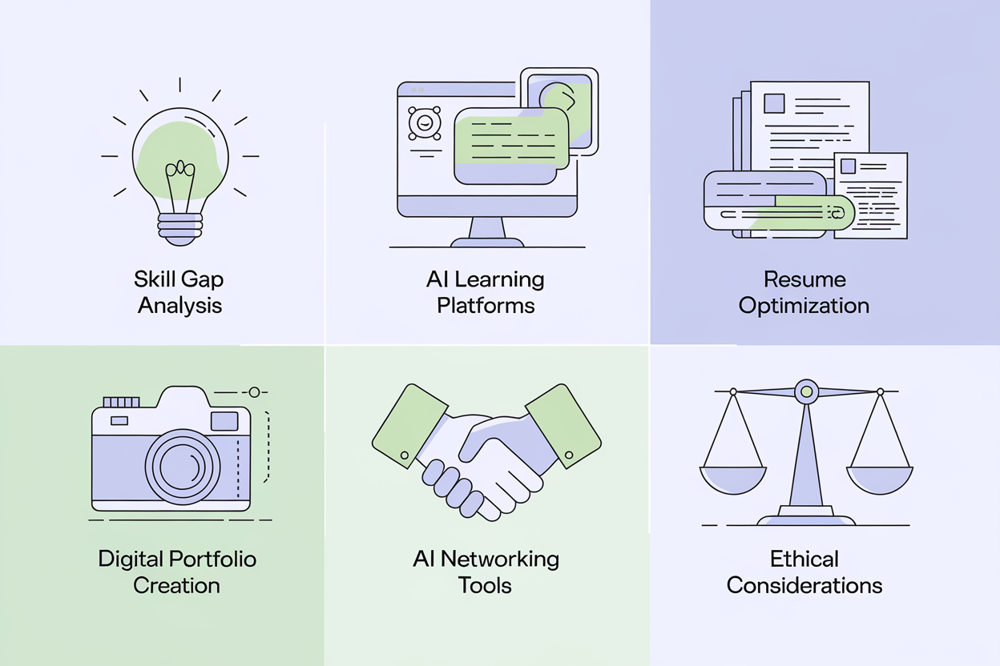
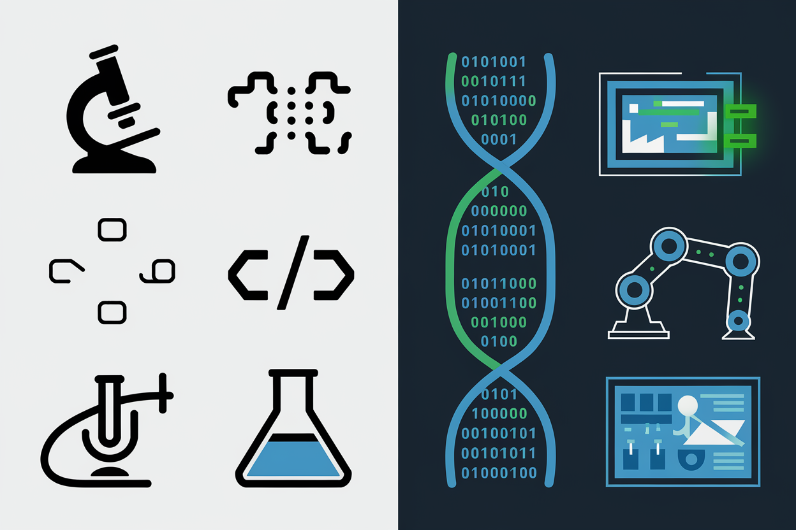
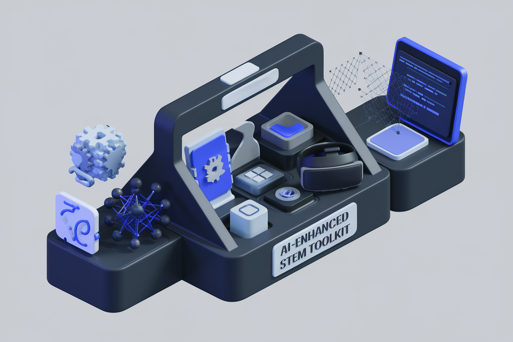
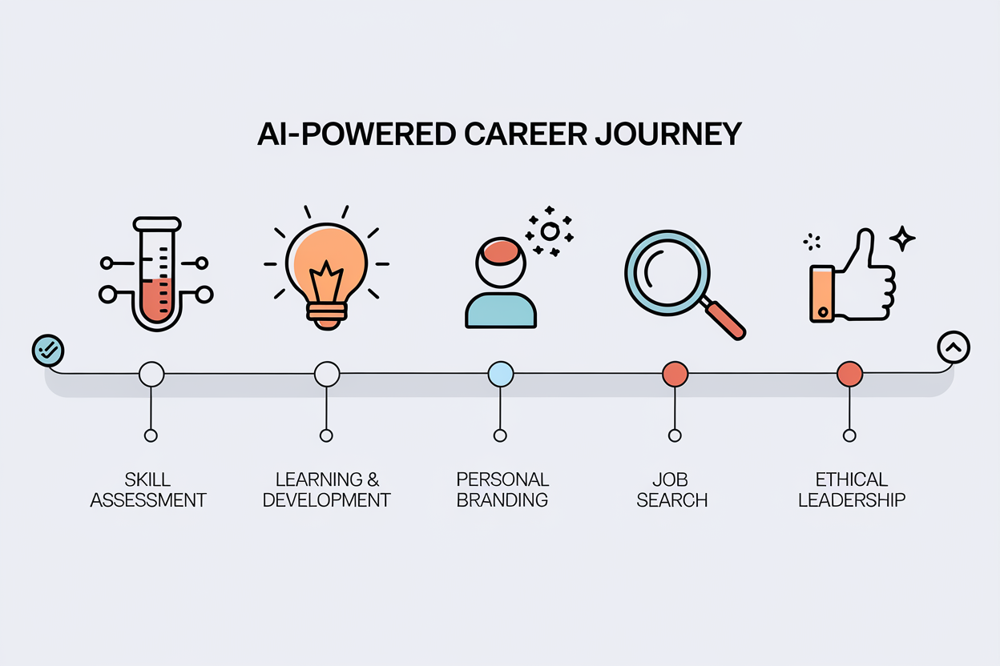
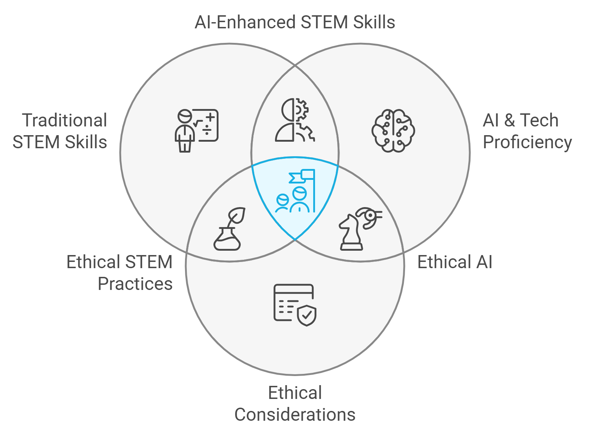

Chapter 8: Case Studies: AI-Powered Success Stories in STEM

Welcome, STEM superstars, as we near the end of this adventure. In this chapter, we pull back the curtain to reveal the wizards behind the AI career transformations.
8.1 Dr. Emily Chen: From Traditional Biologist to Bioinformatics Pioneer
Background:
Dr. Emily Chen, Ph.D. in Molecular Biology, 5 years experience in academic research. Think of her as the Sherlock Holmes of the molecular world, but her mystery was her own career path.
The Challenge:
Feeling constrained by traditional wet lab research, Emily wanted to transition into the emerging field of bioinformatics but lacked formal training in computer science. It's like being a master chef who suddenly wants to cook in zero gravity – same ingredients, whole new ballgame.
AI-Powered Strategy:
- Used AI-powered learning platforms to identify key skills needed for bioinformatics roles.
- Completed online courses in Python, R, and machine learning, tailored to biological applications.
- Utilized AI-enhanced resume tools to highlight transferable skills from her research experience.
- Developed a GitHub portfolio showcasing bioinformatics projects, including an AI-driven gene expression analyzer.
Outcome:
Secured a role as a Bioinformatics Scientist at a leading biotech company, with a 40% salary increase. Talk about a cellular-level glow-up.

Key Takeaway: "AI didn't just help me find a new job; it helped me discover and develop a new career path I hadn't even considered before." - Dr. Emily Chen
8.2 Alex Rodriguez: Software Engineer Turning AI Disruption into Opportunity
Background:
Alex Rodriguez, B.S. in Computer Science, 8 years experience as a backend developer. He was the Michelangelo of middleware, the da Vinci of databases.
The Challenge:
Concerned about AI's potential to automate traditional coding tasks, Alex sought to evolve his role to stay relevant in the changing tech landscape.
AI-Powered Strategy:
- Used AI career prediction tools to identify emerging roles at the intersection of software development and AI.
- Leveraged AI-powered code completion tools to increase productivity, freeing up time for upskilling.
- Completed an AI-recommended certification in Machine Learning Operations (MLOps). He went from writing code to teaching machines to write code.
- Utilized AI-enhanced networking tools to connect with professionals in AI-adjacent roles.
Outcome:
Transitioned to a Machine Learning Engineer role, leading AI integration projects and enjoying a 25% compensation increase.
Key Takeaway: "By embracing AI as a tool for both career planning and skill enhancement, I transformed a potential threat into my biggest career opportunity. Instead of being replaced by robots, I became the guy who tells the robots what to do!" - Alex Rodriguez
8.3 Dr. Sarah Patel: Physicist Venturing into Quantum Computing
Background:
Dr. Sarah Patel, Ph.D. in Theoretical Physics, 3 years postdoctoral research experience. She was to physics what Mozart was to music.
The Challenge:
Sarah wanted to transition from academic research to the burgeoning field of quantum computing in the private sector.

AI-Powered Strategy:
- Utilized AI-driven market analysis tools to identify companies investing in quantum technologies.
- Employed AI writing assistants to translate her academic achievements into industry-relevant accomplishments.
- Used VR simulations to practice quantum computing concepts and gain hands-on experience.
- Created an AI-enhanced digital portfolio showcasing her research's applicability to quantum computing challenges.
Outcome:
Landed a position as a Quantum Algorithm Researcher at a major tech company, doubling her previous academic salary. She didn't just make a quantum leap in her career; she calculated and engineered it.
Key Takeaway: "AI tools helped me bridge the gap between academic physics and industry applications, opening doors I never thought possible." - Dr. Sarah Patel
8.4 Michael Zhang: Chemical Engineer Becoming a Sustainability Tech Leader
Background:
Michael Zhang, M.S. in Chemical Engineering, 10 years experience in the oil and gas industry. He was the alchemist of hydrocarbons, turning black gold into green.
The Challenge:
Driven by growing environmental concerns, Michael aimed to transition into green technology, specifically focusing on AI-driven sustainability solutions.
AI-Powered Strategy:
- Used AI-powered skill gap analysis to identify key areas for upskilling in clean energy technologies.
- Completed AI-recommended courses in renewable energy systems and AI for sustainability.
- Utilized AI tools to optimize his LinkedIn profile, highlighting his transferable skills in process optimization and data analysis.
- Developed an AI-assisted proposal for implementing machine learning in energy efficiency projects.
Outcome:
Secured a role as Head of AI Sustainability Solutions at a renewable energy startup, leading projects that reduce carbon emissions through intelligent energy management. He didn't just change his career; he started changing the world.
Key Takeaway: "AI didn't just help me change jobs; it empowered me to align my career with my values and make a real impact on the world." - Michael Zhang
8.5 Aisha Mahmoud: Civil Engineer Pioneering Smart City Solutions
Background:
Aisha Mahmoud, B.S. in Civil Engineering, 6 years experience in urban planning. She was the architect of tomorrow, drafting the blueprints of future metropolises.
The Challenge:
Aisha saw the potential for AI in urban development but needed to acquire new skills to lead smart city initiatives. She felt like a master city builder in SimCity who suddenly gained access to futuristic tech – exciting, but with a learning curve.
AI-Powered Strategy:
- Leveraged AI-powered trend analysis to identify key technologies in smart city development.
- Used AI-enhanced learning platforms to master IoT, data analytics, and AI applications in urban planning.
- Created an AI-optimized resume that highlighted her unique combination of civil engineering and newly acquired tech skills.
- Developed a VR presentation of a smart city project, showcasing her innovative ideas to potential employers.
Outcome:
Appointed as Smart City Project Lead for a major metropolitan area, overseeing AI-driven initiatives in traffic management, energy efficiency, and urban planning. She went from designing roads to orchestrating entire smart ecosystems.
Key Takeaway: "AI tools not only helped me envision the cities of the future but also shaped my career path to help build them. It's like I was given the cheat codes to build a real-life Wakanda!" - Aisha Mahmoud
8.6 Dr. James Lee: From Academic Researcher to AI Ethics Consultant

Background:
Dr. James Lee, Ph.D. in Computer Science with a focus on AI, 7 years in academia. He was the Gandalf of algorithms, wielding code like magic spells.
The Challenge:
Concerned about the ethical implications of AI, James wanted to transition from pure research to a role where he could influence the responsible development of AI technologies.
AI-Powered Strategy:
- Used AI-powered sentiment analysis to identify key concerns in AI ethics discussions across various industries. He became the emotional intelligence expert for emotionless machines.
- Leveraged AI writing tools to translate his academic papers into accessible articles on AI ethics for industry publications. He turned tech jargon into bedtime stories for CEOs.
- Created an AI-enhanced online course on ethical AI development, establishing himself as a thought leader. He became the Mr. Rogers of the AI neighborhood, teaching everyone to be good digital neighbors.
- Utilized AI networking tools to connect with ethics officers and decision-makers in tech companies. His network grew faster than a neural net in training.
Outcome:
Established a successful consultancy specializing in AI ethics, advising major tech companies and government agencies on responsible AI development.
Key Takeaway: "AI tools helped me amplify my voice in the critical conversation about ethical AI, allowing me to shape the future of technology in a meaningful way." - Dr. James Lee
8.7 Key Lessons from AI-Powered STEM Career Transitions
Alright, STEM superstars, let's distill these success stories into a potent elixir of career wisdom. Here are the key ingredients for your own AI-powered career transformation:
- Embrace AI as a Career Development Tool: All of our case studies used AI not just in their work, but as a means to guide and enhance their career transitions. It's like having a GPS for your career journey, but instead of avoiding traffic, you're avoiding obsolescence.
- Focus on Interdisciplinary Skills: The most successful transitions leveraged unique combinations of traditional STEM knowledge and cutting-edge AI skills.
- Continuous Learning is Non-Negotiable: Each professional committed to ongoing education, often using AI-powered platforms to guide their learning journey.
- Translate Skills Across Domains: AI tools were crucial in helping these professionals reframe their existing skills for new contexts.
- Develop a Forward-Looking Perspective: Successful transitions involved anticipating future trends and positioning oneself ahead of the curve.
- Leverage AI for Personal Branding: AI-enhanced tools for resume building, LinkedIn optimization, and content creation played a key role in showcasing unique value propositions.
- Address Ethical Implications: Considering the ethical aspects of AI not only led to new career paths but also positioned these professionals as responsible leaders in their fields.

8.8 Charting Your Own AI-Powered STEM Career Journey
As we wrap up this ride, remember that these case studies aren't just success stories to admire from afar. They're your very own treasure map to career gold. The AI revolution in STEM fields is like the Wild West of career opportunities – full of challenges, but ripe with unprecedented potential for those bold enough to stake their claim.
By embracing AI tools for career development, continuously expanding your skills, and maintaining a forward-looking perspective, you too can transform your STEM career in the AI age. Time to write your own success story.
Your next steps:
- Conduct an AI-powered analysis of your current skill set and career goals.
- Identify the AI tools and resources most relevant to your field and career aspirations.
- Develop a personalized learning plan that combines your STEM expertise with cutting-edge AI skills.
- Create or update your AI-optimized resume and LinkedIn profile.
- Start building your professional brand as a forward-thinking STEM professional in the AI era.
Remember, the future of STEM is not about competing with AI, but about leveraging it to push the boundaries of what's possible. Your journey to an AI-enhanced STEM career starts now. Embrace the change, lead the innovation, and shape the future of your field. Who knows? Maybe in the next edition of this book, we'll be featuring your success story!
Practical Exercise: Your AI-Powered Career Transition Plan
Time to put your newfound knowledge into action! Complete these tasks to kickstart your own AI-powered career transformation:
- Identify Your Target: Based on the case studies and your interests, what AI-adjacent field in STEM appeals to you most?
- Skill Gap Analysis: Use an AI-powered skill assessment tool to identify the top 3 skills you need to develop for your target field.
- Learning Roadmap: Create a 6-month learning plan to acquire these skills, incorporating AI-recommended resources and courses.
- Personal Brand Makeover: Revise your resume and LinkedIn profile to highlight your forward-thinking approach and any AI-relevant skills or projects.
- Networking Strategy: Use AI-powered networking tools to identify and connect with 5 professionals in your target field.
- Ethical Consideration: Write a brief statement on how you plan to address ethical considerations in your AI-enhanced STEM career.
By completing this exercise, you'll have taken the first concrete steps towards your own AI-powered STEM career success story. Remember, the future is not something that happens to you—it's something you actively shape. With the strategies and insights from this book, you're well-equipped to thrive in the AI-driven future of STEM.
Final Quiz: "AI-Powered STEM Career Mastery"
-
Which of the following best describes the role of AI in modern STEM careers?
-
What is a key strategy for future-proofing a STEM career in the AI age?
-
How can AI tools assist in resume optimization for STEM professionals?
-
What is an important ethical consideration when using AI in job applications?
-
In the case study of Dr. Emily Chen, what was a key factor in her successful career transition?
Answers: 1-b, 2-c, 3-b, 4-c, 5-c
How did you do? If you aced it, congratulations! You're well on your way to becoming an AI-powered STEM career maestro. If not, don't worry – even Tony Stark had to start somewhere. Keep studying, and soon you'll be navigating the AI-driven STEM landscape like a pro!